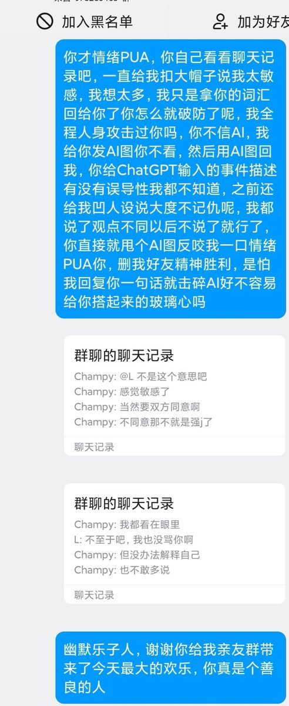

后续这哥们又把我加回来了，给我发了进群链接，然后跟我发癫说你进群吧，刚才什么事啊，我失忆了，灵活点嘛，别那么小心翼翼的。发了几十条，凌晨一点多跟我说睡觉了，但是以这人的破防程度我觉得他肯定睡不着，所以我就睡了。结果他早上六点又给我发了个小作文，叫我以后不要找他了，他现实生活很忙，平常都不看QQ的（实际上天天水群最多的就是他）然后我就回他：不找了啊，什么事啊，我失忆了，灵活点嘛，你忙你的
昨天生气的时候把他开了，这人叫*国梁，山东泰安人，这下破案了，原来是耀祖啊。我住泰安隔壁的朋友说泰安挺重男轻女的，怪不得他前天被我骂了几句就急哭了（真哭了）还国梁呢，这名字太有耀祖那味了。天天活在重男轻女的环境里从来没人敢忤逆他的顺直男巨婴，没想到被一个网友给戳破他的泡泡了，太乐子了。

昨天生气的时候把他开了，这人叫*国梁，山东泰安人，这下破案了，原来是耀祖啊。我住泰安隔壁的朋友说泰安挺重男轻女的，怪不得他前天被我骂了几句就急哭了（真哭了）还国梁呢，这名字太有耀祖那味了。天天活在重男轻女的环境里从来没人敢忤逆他的顺直男巨婴，没想到被一个网友给戳破他的泡泡了，太乐子了。

主播群偶遇一个傻逼顺直男管理员，说如果找个女朋友就不需要小玩具了，女朋友比小玩具好，我觉得这话很歧视/物化女性，于是我就企图让他理解为什么，但我跟他拉了个小群聊的没在主播群里聊，他就开始说我太敏感想太多给我扣大帽子，我发AI回复他说不信AI不看，最后我觉得互相不理解那就尊重吧，我就说 https://t.co/PwBGLl087p